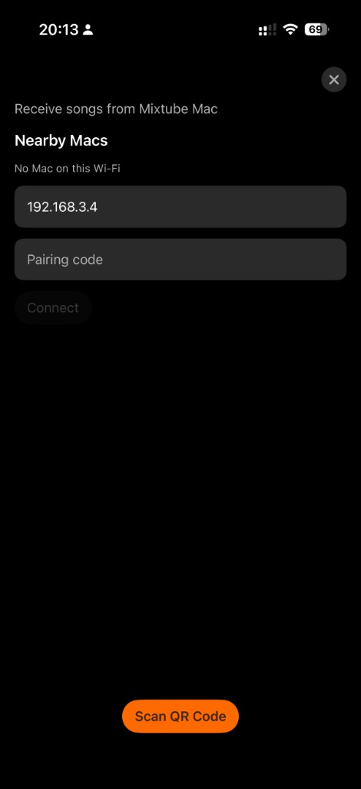
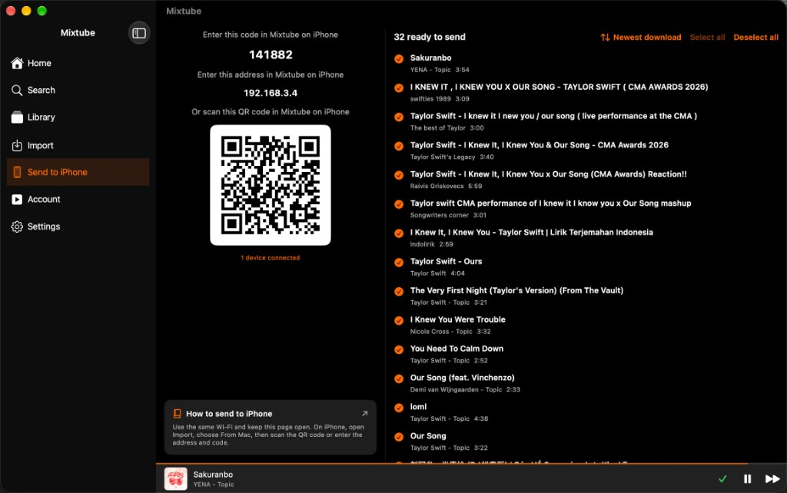
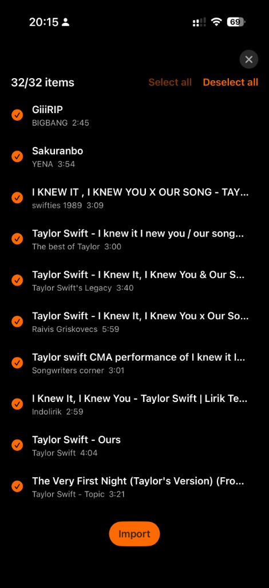
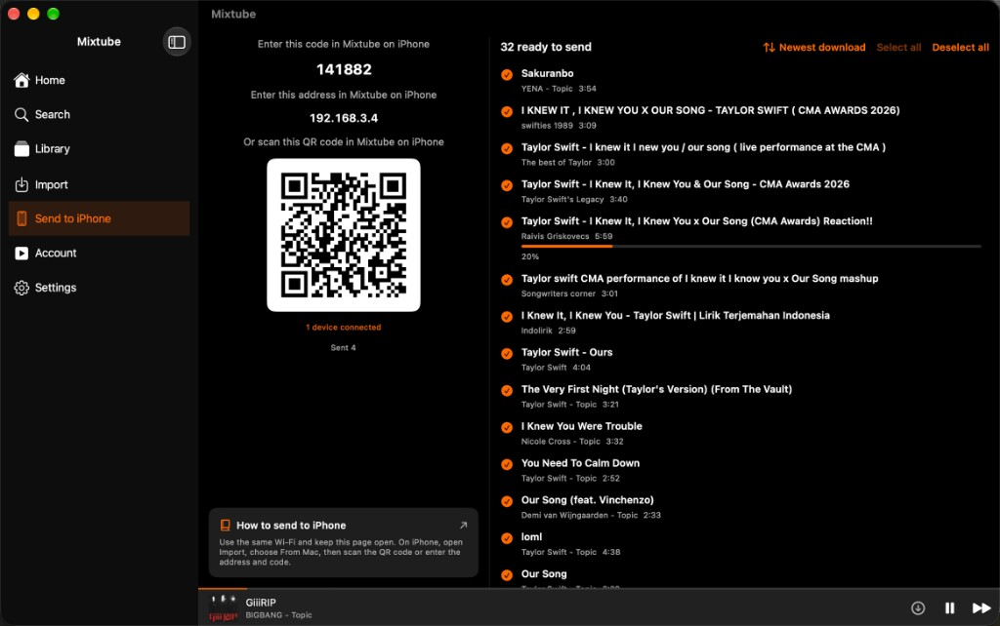
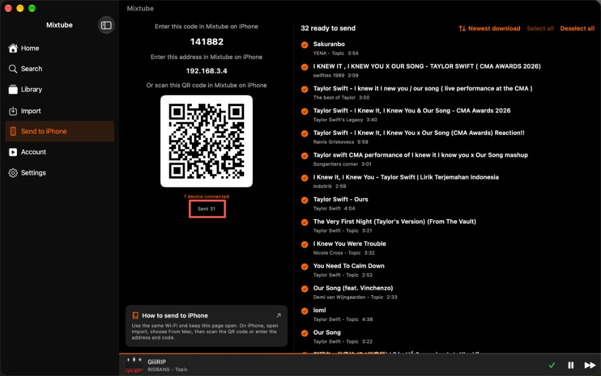
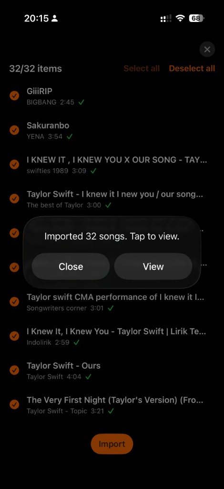

Send songs from Mac to iPhone
Step 1. Install Mixtube on Mac and iPhone
Install Mixtube Mac and Mixtube iPhone.
Step 2. Connect both to the same Wi-Fi
Mixtube Mac and Mixtube iPhone must be on the same Wi-Fi.
Step 3. Save songs on the Mac
Open Mixtube Mac and download some songs you like. Only songs saved on that Mac can be sent.
Step 4. Open Send to iPhone
In the left menu of Mixtube Mac, click Send to iPhone. Leave this page open. It shows a pairing code, the Mac’s IP address, and a QR code.

Step 5. Open Import on iPhone
Open Mixtube iPhone and tap the Import tab.

Step 6. Choose From Mac
Tap From Mac.
Step 7. Enter the IP address and pairing code, or scan
Type the IP address and pairing code shown on the Mac, then tap Connect. Or tap Scan QR Code.


Step 8. Select songs and tap Import
Select the songs you want, then tap Import.

Step 9. Wait for the transfer to finish
Progress is shown while the songs are sending. Wait until the transfer finishes.


Step 10. Open the songs on iPhone
When the transfer finishes, Mixtube iPhone shows how many songs were imported. Tap View to open them. Imported songs can play offline.

